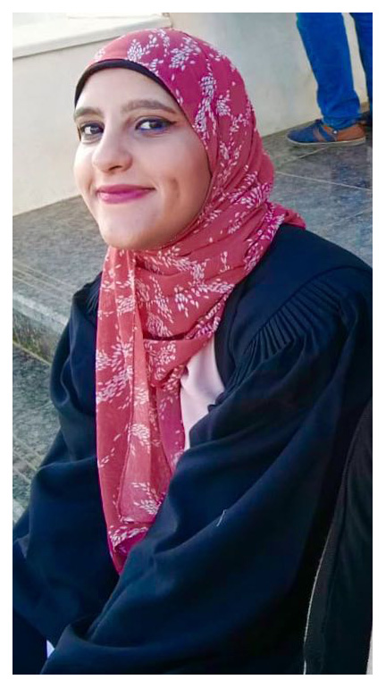
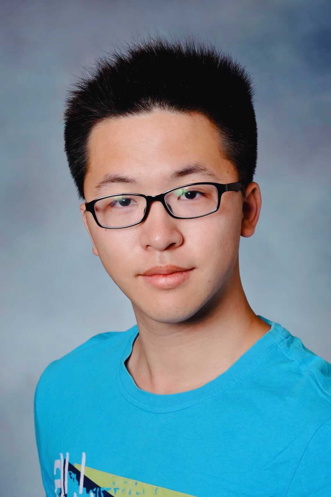
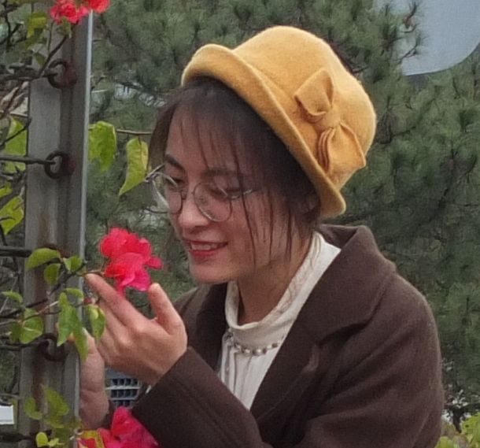
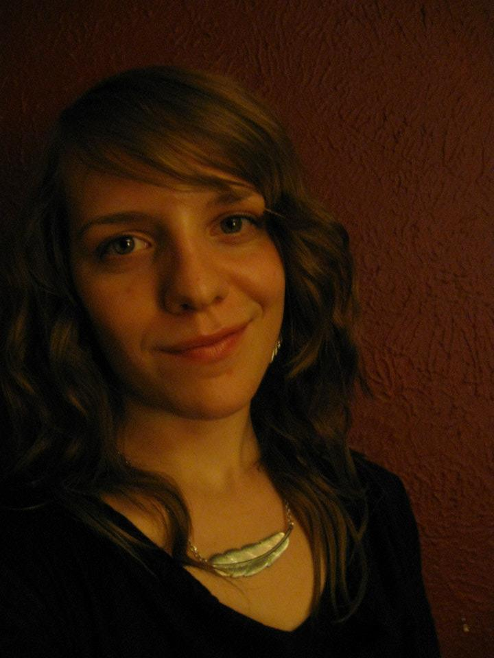
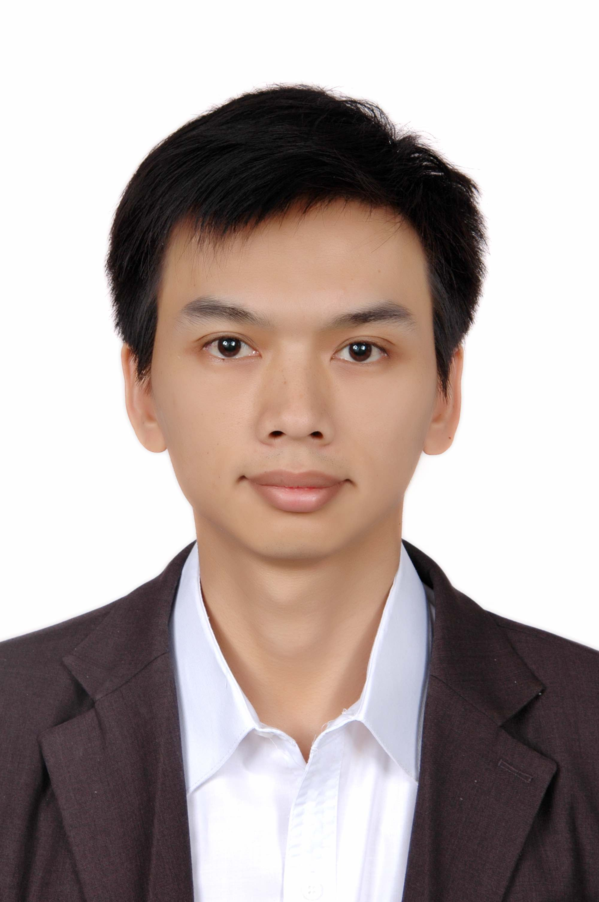

Tao Research Group
All email addresses are AT smu.edu
Principal Investigator

Peng Tao
Associate Professor
Computational Chemistry
E-mail:
Peng joined the Department of Chemistry in the fall of 2013 as an Assistant Professor, and was promoted to Associate Professor in 2019. He received his B.S. in Chemistry (1998) and M.S. in Physical Chemistry (2001) from the Peking University in China. He obtained his Ph.D. in Computational Chemistry from the Ohio State University in 2007. Peng’s research interest focuses on developing highly efficient and accurate computational methods to calculate free energy for chemical and biological processes, and their application to solve real world chemistry and biological problems.
Graduate Students

Mayar Mohamed
Ph.D. Student
Computational Chemistry
Email: mayarm
Graduate student in Theoretical and Computational Chemistry Program in Southern Methodist University.

Zilin Song
Ph.D. Student
Computational Chemistry
Email: zilins
Zilin Song obtained his Bachelor and Master’s degree in Chemical Engineering from Wuhan Institute of Technology. His interests in computer science and background in chemical engineering lead him to the field of computational chemistry. In his free time he enjoys watching animes and reading books.

Hao Tian
Ph.D. Student
Computational Chemistry
Email: haot
Hao obtained his Bachelor degree in Chemical Engineering from Beijing University of Chemical Technology, Beijing, China. He loves coding and machine learning. In his free time, he likes swimming and cooking. Please check his personal website for more information.

Francesco Trozzi
Ph.D. Student
Computational Chemistry
Email: ftrozzi
Francesco obtained his Bachelor's degree in Chemistry at Alma Mater Studiorum, University of Bologna, Italy. Due to his fascination for (Bio)-Organic Chemistry and his passion for Computational Chemistry, maturated during his undergraduate research project about the optimization of LYS@C60 binding through in silico mutagenesis, he decided to pursue the study of Computational Chemistry applied to bio-molecular systems with a Research Master in Drug Discovery with a specialization in Computational Medicinal Chemistry and Toxicology at Vrije Universiteit of Amsterdam, the Netherlands. In Amsterdam, he grew a scientific interest in the computational prediction of protein allostery, which brought him at SMU to work under Dr. Tao supervision as Ph.D. student. Food and wine enthusiast, loves to spend his free time cooking and listening to music. Undercover death metal and anime lover.

Chao Yin
Ph.D. Student
Computational Chemistry
Email: chaoy
Graduate student in the Theoretical and Computational Chemistry Program.

Sian Xiao
Ph.D. Student
Computational Chemistry
Email: sxiao
Graduate student in the Theoretical and Computational Chemistry Program.

Hunter La Force
Ph.D. Student
Computational Chemistry
Email: hlaforce
Graduate student in the Theoretical and Computational Chemistry Program.
Undergraduate Students

Daniel Chavez
B.S. Biochemistry and General Business
Email: dcchavez
Daniel is an undergraduate student working towards a double major for both a B.S. in Biochemistry and a General Business degree. He joined the Group in the Winter of 2019. Daniel enjoys working out, superhero movies, and good food with friends!

Papria Bhuiyan
B.S. Computer Science
Email: pbhuiyan

Jonathan Boothe
B.S.
Email: jboothe
Alumni
Graduate Students

Feng Wang
1/2016 to 12/2019
Feng defended her Ph.D. Degree in Theoretical and Computational Chemistry on November 20, 2019.

Hongyu Zhou
9/2014 to 6/2019
Hongyu defended his Ph.D. Degree in Theoretical and Computational Chemistry on April 18, 2019.
He was the very first graduate student to obtain a Ph.D. Degree from our group!

Li Shen
9/2015 to 5/2018
Graduate Student
Computational Chemistry

Yifan Sun
8/2017 to 3/2018
Graduate Student
Computational Chemistry

Zheng Dong
1/2016 to 8/2017
Master Student
Computational Chemistry
Zheng defended his Master Degree in Computational Chemistry on June 12, 2017.

Hao Xu
9/2015 to 5/2017
Master Student
Computational Chemistry
Hao defended his Master Degree in Computational Chemistry on May 5, 2017.
Hao was a graduate student in Southern Methodist University from Fall of 2015 until May 2017. He graduated from SMU in May 2017 with a Master degree in Chemistry.

Yao Zhang
9/2013 to 12/2014
Master Student
Computational Chemistry
Yao defended her Master Degree in Computational Chemistry on December 4, 2014.
Undergraduate Students
Trevor Heinzmann
2017-2020
Shilpa Kudva
2014-2017

Mark Honrales
2014-2016

Jenna Kleiman
2014-2016

Phuong Nguyen
2014-2016

Camille Biard
2013-2014
Joon Yong Moon
2013-2016

Ashleigh Miller
2013-2014
Yazen Abusad
2013-2014
Postdoctoral Researcher

Robert Kalescky
2014-2015
Rob was a post doctoral researcher from 2014-2015. Now he is an Applications Scientist at SMU Center for Scientific Computation.
Visiting Scholar<

Qin Huang
Qin is a visiting scholar from Guangxi University for Nationalities in Nanning, Guangxi, China. He received his B.S. in Chemistry (1999) and Ph.D. in Physical Chemistry (2007) from the Peking University in China. Qin’s research interest focuses on discovering new drug candidates from Traditional Chinese Herbs (TCHs) based on computational approaches, and inorganic materials with their application to solve environmental problems.